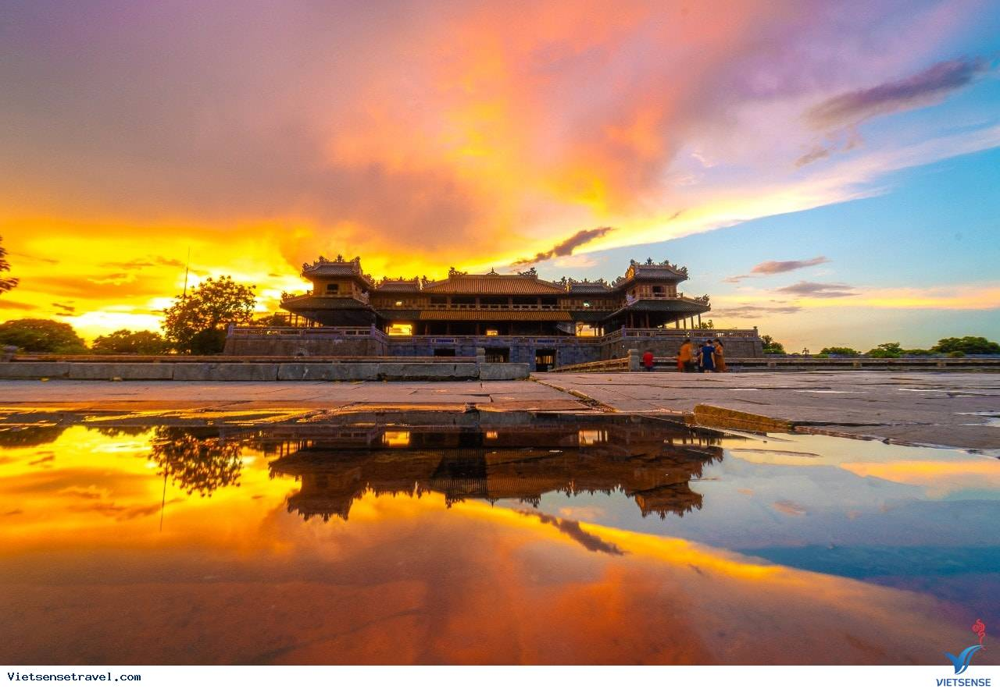

Du lịch trong nước là một trong những điều tuyệt vời nhất mà bạn nên khám phá. Có rất nhiều các địa điểm du lịch nổi tiếng ở Việt Nam có cảnh đẹp tuyệt trần để tham quan và trải nghiệm trên mảnh đất hình chữ S xinh xắn trải dài dọc theo các miền của Tổ quốc.
Khung cảnh thiên nhiên tươi đẹp của đất nước bắt đầu từ những ngọn núi hùng vĩ uốn lượn xuống những cánh đồng lúa xanh tươi cho đến các vùng nông thôn đơn sơ giản dị vẽ lên một bức tranh thơ mộng. Trái ngược vùng quê yên tĩnh là các thành phố lớn mang hơi thở của cuộc sống đương đại nhộn nhịp, tấp nập và còn rất nhiều điều để bạn tìm hiểu.
THÔNG TIN
Phú Quốc
Hòn đảo ngọc sở hữu nhiều bãi biển đẹp trải dài từ Bắc đảo tới Nam đảo, 99 ngọn núi, đồi và khu rừng nguyên sinh phong phú hệ động thực vật. Tại Bắc đảo Phú Quốc, du khách có thể ghé thăm những điếm đến nổi tiếng như làng chài Rạch Vẹm, Hòn Một, Bãi Dài, VinWonders Phú Quốc và Vinpearl Safari Phú Quốc, mũi Gành Dầu… 
THÔNG TIN
Huế
Huế là xứ sở mộng mơ, là mảnh đất cố đô dù đã trải qua trăm năm nhưng vẫn nguyên vẻ cổ kính, dịu dàng, đắm thắm như thời gian vẫn luôn đi chậm lại nơi đây. Huế còn được thiên nhiên ưu ái khi nằm lọt thỏm giữa muôn vàn cảnh đẹp của biển, sông, núi, đèo….
THÔNG TIN
Sapa
Đến Sapa không chỉ để tận hưởng không khí trong lành, sự yên bình giản dị của một vùng đất phía Tây Bắc. Mà Sapa còn là điểm đến để bạn chiêm ngưỡng những vẻ đẹp hoang sơ của núi rừng Tây Bắc. Những ruộng bậc thang, thác nước, những ngọn vúi hùng vĩ, khám phá những phong tục tập quán, nét đẹp văn hóa của các dân tộc trên núi.
Thật khó lòng tóm gọn hết những địa điểm du lịch Việt Nam nổi tiếng chỉ trong khuôn khổ một bài viết. Bởi vì đất nước ta vốn sở hữu thiên nhiên phân hoá đa dạng, với lịch sử phát triển hàng nghìn năm văn hiến và nét đẹp văn hoá được hình thành rộng sâu qua nhiều thế hệ.
Thế cho nên bài viết này chỉ có thể khiêm nhường gợi ý cho một vài điểm đến đặc sắc trong nước, mong rằng bạn sẽ có thêm ý tưởng mới cho hành trình du lịch Việt Nam.